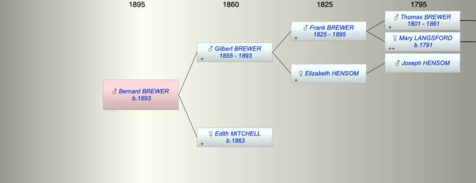

| [Index] |
| Bernard Devon Mitchell BREWER (1893 - ) |
|  |
| b. 10 Jun 1893 |
| Near Relatives of Bernard Devon Mitchell BREWER (1893 - ) | ||||||
| Relationship | Person | Born | Birth Place | Died | Death Place | Age |
| Grandfather | Frank BREWER | 22 Nov 1825 | Exminster | 04 Nov 1895 | Kingston On Thames | 69 |
| Grandmother | Elizabeth HENSOM | |||||
| Father | Gilbert Devon BREWER | 08 May 1855 | 03 Jun 1893 | Greenhythe | 38 | |
| Mother | Edith Ellen MITCHELL | 1863 | Topsham | Y | ||
| Self | Bernard Devon Mitchell BREWER | 10 Jun 1893 | ||||
| Brother | Arthur Claude BREWER | |||||
| Brother | Eric Mitchell BREWER | |||||
| Brother | Ronald M BREWER | |||||
| Brother | Francis John Mitchell BREWER | 1888 | 1929 | 41 | ||
| Sister | Living or Recently Deceased | |||||
| Aunt | Annie Hesom BREWER | |||||
| Uncle | Thomas Brewer HEATH | 13 Jan 1858 | Deptford | Y | ||
| Aunt | Julia BREWER | 1849 | Exminster | Y | ||
| Uncle | Isaac | |||||
| Uncle | Warwick BREWER | 1853 | 1872 | 19 | ||
| Aunt | Eva L BREWER | 1858 | Y | |||
| Cousin | Living or Recently Deceased | |||||
| Events in Bernard Devon Mitchell BREWER (1893 - )'s life | |||||
| Date | Age | Event | Place | Notes | Src |
| 03 Jun 1893 | Death of father Gilbert Devon BREWER (aged 38) | Greenhythe | |||
| 10 Jun 1893 | Bernard Devon Mitchell BREWER was born | ||||
| Created on a Mac™ using iFamily for Mac™ on 15 Sep 2023 |